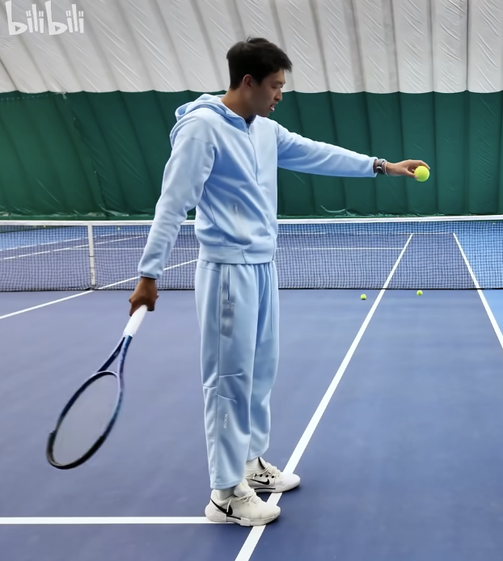
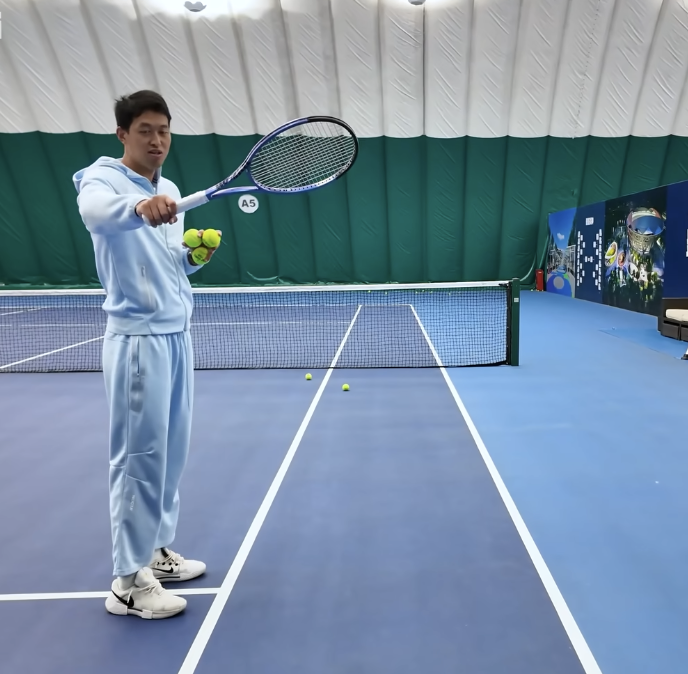
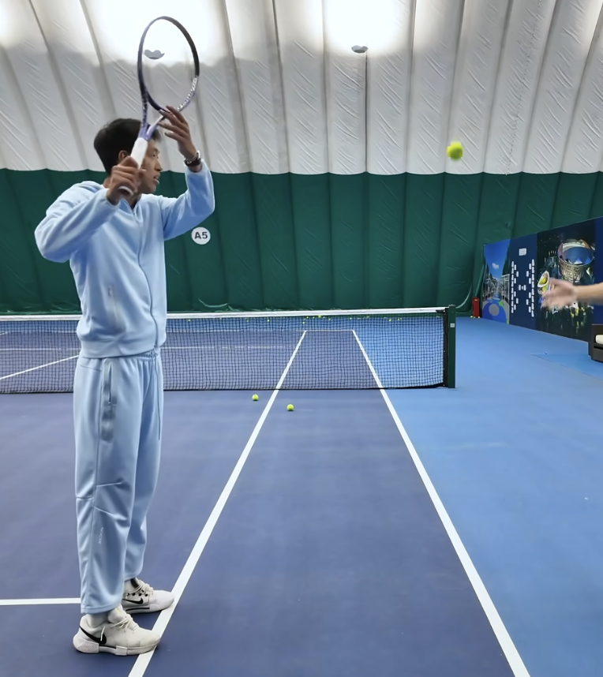

Tennis
球质
旋转、速度、角度、
延长击球时间：提高击球质量下限
叶修四力四件套
- 四力
- 底线+发球线的四种组合
- 四件套
- 打完再转的练习方式？
- 合格标准
- 过网高度有三个球左右，落点在单打线和双打线之间，第一眺在发球线内或底线内，第二眺在对应线外
一般正手
- 握拍不影响，最好能够使用两种以上的握拍完成练习
- 一阶段：不架拍，拍子在身侧，打球下方一些，动作慢一些
- 二阶段：大臂抬起架拍，小臂内旋一些，不要绷直手臂
- 打球后方，打实一些，不要蹭/擦（注意击球声音）
- 打实后，拍在球上方离开
- 三阶段：完整架拍，需要抛球或者抛球机
- 加入架拍
- 两个大臂可以抬起来，留出发力空间
参考视频



常见问题
- 大臂抬不够，没有打球下面
- 碰球前先收小臂了,至少碰球后半秒你别收小臂
- 别拉拍
- 起始位置不对，真到打球你肯定是拉到那个位置
- 拍头不要过左肩
- 拍面击球后，手的行动轨迹应该只有向上了
- 从身侧向身前推手
- 可以用小臂，但是方向要与大臂抬的方向一致？？
- 击球点的时候，如果想要击球点更加靠近球下方，需要能不抬肘
直臂正手
应该更应该关注出拍头和屈肘的部分，另外转体会更加少
架拍：几乎排面朝地
区别：不太能有支撑感，需要在出拍头的时候击球
一阶段：向外，把力给出去，
- 架拍高一点，拍头高于头，架起来就行
避免在架拍的时候翻手腕，这样可以在击球时减少掰手腕的可能性
反手
脚下-四件套
mogul step/stance
小臂内旋
正手
- 架拍：减少可能的奇怪问题
- 击球：更多做出内旋延伸，而不是手腕雨刷
- 练习：把球和动作区分开，动作首先昨完整
- 演示视频
- 手腕不支撑&手腕支撑的抽象版
- 手腕篇：击球后向前向上延伸
发球
练的时候再补充
Some Random Tips
- 主动选择击球点。打球的时候要先学会退，初学阶段要在球的下落期击球，不能盲目向前（这不是真正的主动击球），退后不意味就是被动击球。练习的时候，应该更多的练习下落期击球，在上升期少练，随着水平提高再逐渐调整
正手
- 可以先肩后手，也可以先手后肩，重点是肩要稳定，不要让肩膀拖着手（拉扯肌肉）
双反
QAs
- 延长击球时间：提高击球质量下限
- 打斜线：击球点、转肩一丢丢
四力的练习
底线&发球线到对面底线&发球线的四种组合
合格标准
最终的标准是过网高度有三个球左右，落点在单打线和双打线，发球线向双打线的延长线和网围的区域里